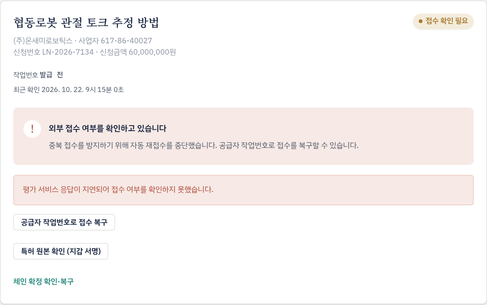
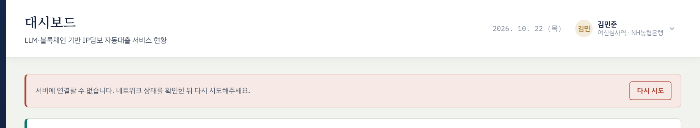
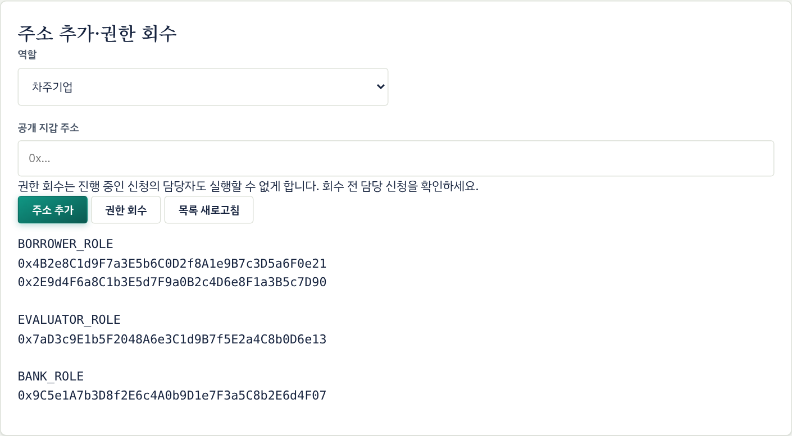

시범운영 중 생길 수 있는 지갑·거래 오류, 보고서 생성 장애, 시스템·인프라 장애, 보안사고, 업무 오처리에 대해 참여기관이 같은 절차로 대응해 업무 중단과 피해를 줄이도록 한다.
4.1목적과 대응 원칙
① 블록체인 기록이 기준
화면·DB가 블록체인 기록과 다르면 블록체인 기록을 기준으로 복구한다. 복구는 체인 확인·복구로 한다.
② 같은 거래를 다시 보내지 않는다
보낸 거래의 결과를 확인하기 전에는 같은 버튼을 다시 누르지 않는다. 다른 PC·다른 브라우저에서 같은 동작을 실행하지도 않는다.
③ 증적을 먼저 남긴다
신청번호, 거래 해시, 평가 작업번호, 화면 메시지 원문, 발생 시각을 기록하고 화면을 캡처한 뒤 조치한다.
④ 임의로 지우거나 초기화하지 않는다
DB 초기화, 브라우저 사이트 데이터 삭제, 보관 파일 삭제는 운영사 판단 없이 하지 않는다.
⑤ 개인키는 공유하지 않는다
복구 과정에서도 운영사는 개인키나 복구 문구를 요구하지 않는다. 요구가 있으면 사고로 보고한다.
4.2비상 등급 분류 협의안
등급
정의
예시
보고 시한
대응 주체
1등급 관심
개별 사용자가 매뉴얼 조치로 해결할 수 있는 오류
서명 취소, 지갑 전환, 가스 부족, 사업자번호 확인
자체 해결. 반복 시 운영사 문의
사용자
2등급 주의
특정 신청·기능의 처리 지연이나 실패. 운영사 조치 필요
보고서 생성 실패 반복, 접수 확인 필요, 동기화 실패 지속, 상환 오기록
인지 후 1시간 이내
운영사
3등급 경계
서비스 전체 또는 핵심 구성요소 중단, 업무 오처리
플랫폼 서버·블록체인·평가 서비스 장애, 평가·결정 오처리
인지 즉시 (30분 이내)
운영사, 각 기관 책임자
4등급 심각
보안사고 또는 데이터 손실
개인키 유출, 원본·평가정보 유출, 문서 위변조, DB 유실
인지 즉시
전 기관 책임자, 정보보호책임자
4.3비상 연락·보고 체계
최초 발견자증적 기록·화면 캡처
→
소속 기관 책임자은행·평가기관·차주
→
플랫폼 운영사등급 판정·영향 파악
→
관련 기관 전파3·4등급: 정보보호책임자·관계기관
그림 4-1비상 보고 흐름
발견자는 즉시 4.7절 양식의 기본 항목(신청번호, 거래 해시, 작업번호, 메시지 원문, 시각)을 기록하고 화면을 캡처한다.
소속 기관 책임자와 플랫폼 운영사에 알린다. 4등급은 두 곳에 동시에 알린다.
운영사는 등급을 판정하고 영향 범위(영향받는 신청, 기관, 지갑)를 파악해 관련 기관에 전파한다.
조치가 끝나면 운영사가 복구 결과와 재발 방지 대책을 공유한다. 3등급 이상은 서면으로 보고한다. 협의안
비상 연락망
구분
기관
담당자
연락처
비고
플랫폼 운영 총괄
머스트리
등급 판정·전파
시스템 운영(서버·DB)
머스트리
24시간 연락 여부 기재
블록체인 네트워크(Mustsem)
RPC 노드
평가 서비스(보고서 생성)
작업번호 확인
여신 업무 책임자
NH농협은행
정보보호 책임자
NH농협은행
4등급
평가 업무 책임자
IP 가치평가기관
정보보호 책임자
머스트리
4등급
4.4상황별 대응 절차
각 상황은 증상(화면 메시지), 원인, 조치, 금지 사항 순서로 정리했다. 메시지는 화면에 표시되는 문구 그대로다.
A. 지갑·거래
A1MetaMask 서명·거래를 취소함1등급
증상
MetaMask 서명을 취소했습니다. 다시 시도할 수 있습니다.
조치
같은 버튼으로 다시 실행한다. 차주 신청 단계에서 문서 업로드 뒤 거래만 취소했다면 신청 정보는 이미 저장되어 있으므로 신청 등록 다시 시도 또는 신청 상세의 업로드 재사용 · 신청 등록 재시도로 등록한다. 파일을 다시 올릴 필요는 없다.
A2거래를 보냈는데 확정되지 않음1등급30분 이상 2등급
증상
거래가 전송됐지만 아직 미확정입니다. 같은 동작을 다시 전송하지 말고 체인 확인을 눌러주세요. 영수증 대기 시간이 초과됐습니다. 재전송하지 말고 체인 확인으로 복구하세요.
원인
네트워크 혼잡이나 RPC 지연으로 거래 확정이 늦어짐
조치
거래 해시를 기록한다(신청 화면의 '거래 해시' 또는 MetaMask 활동 탭).
같은 브라우저에서 잠시 뒤 체인 확인·복구를 누른다.
30분 이상 확정되지 않으면 거래 해시를 운영사에 전달한다. 협의안
금지
같은 버튼 다시 누르기, 브라우저 사이트 데이터 삭제, 다른 PC에서 같은 동작 실행
A3가스(MST) 잔액 부족1등급
증상
지갑의 가스 잔액이 부족합니다.
조치
운영사에 지갑 공개 주소를 알리고 MST 충전을 요청한다. 충전을 확인한 뒤 다시 실행한다.
A4지갑 또는 권한이 맞지 않음1등급
증상
이 신청에 배정된 평가사 지갑으로 전환하세요.이 신청에 배정된 은행 지갑으로 전환하세요.이 신청 담당 지갑으로 전환하세요.연결한 지갑에 BANK_ROLE 권한이 없습니다.이 지갑에 필요한 역할이 없습니다.이 신청에 배정된 담당자 또는 차주만 접근할 수 있습니다.
조치
MetaMask에서 배정된 지갑을 선택하고 다시 실행한다. 배정된 본인 지갑인데도 권한이 없다고 나오면 운영사에 권한 회수 여부를 확인한다.
A5처리 중 계정·네트워크가 바뀜, 대기 중인 요청1등급
증상
계정 또는 네트워크가 변경됐습니다. 처음 지갑·네트워크로 돌아와 다시 시도하세요.MetaMask에 대기 중인 요청을 먼저 확인하세요.
조치
MetaMask 창에 남은 요청을 승인하거나 거부해 정리한 뒤, 처음 지갑과 Mustsem 네트워크로 돌아와 다시 실행한다. 처리 중에는 계정과 네트워크를 바꾸지 않는다.
A6거래는 확정됐는데 화면이 바뀌지 않음1등급지속 시 2등급
증상
MetaMask에서 거래 완료를 확인했는데 상태가 그대로이거나 서버 오류 메시지가 표시됨
원인
거래 확정 뒤 서버 동기화 실패(일시적 서버·네트워크 오류)
조치
체인 확인·복구를 누른다(신청 진행 상황, IP 가치평가, 대출 심사 화면에 있다). 서버가 블록체인 기록을 읽어 화면을 맞춘다. 이미 처리된 건은 다시 발급되지 않는다. 반복 실패하면 운영사에 보고한다.
A7현재 단계에서 실행할 수 없음1등급
증상
현재 신청 단계에서 실행할 수 없습니다.이미 등록된 신청입니다. 체인 상태를 동기화하세요.현재 단계에서 이 담당자의 열람·검토 권한이 없습니다.
조치
이미 다른 화면에서 처리됐거나 단계가 바뀐 경우다. 체인 확인·복구로 현재 상태를 확인한 뒤 그 단계에 맞는 업무를 한다.
B. 평가 보고서 생성
B1보고서 생성 실패2등급
증상
상태 '생성 실패', 보고서 생성이 중단되었습니다와 실패 사유
원인
공고전문 PDF의 글자 추출 불가(스캔 이미지 등), 평가 서비스 재시작, 내부 오류
조치 (평가사)
사유를 확인하고 보관 파일로 평가 재시도를 누른다(지갑 서명). 같은 사유로 2회 이상 실패하면 작업번호와 사유를 운영사에 전달한다.
조치 (운영사)
진행 로그로 원인을 확인한다. PDF 자체가 문제면 차주에게 글자 추출이 되는 특허청 공고전문 PDF로 새로 신청하도록 안내한다.
B2평가 미접수2등급
증상
상태 '미접수', 신청은 저장되었지만 외부 접수가 완료되지 않았습니다. 재시도 시 공급자가 지정한 대기 시간 이후에 재시도하세요.
원인
평가 서비스 대기열 상한 도달(서비스 전체 동시 실행 1건, 활성 접수 최대 4건) 또는 명확한 접수 거부
조치
안내된 대기 시간(통상 60초)이 지난 뒤 보관 파일로 평가 재시도를 누른다. 반복되면 운영사가 평가 서비스 대기열을 확인한다.
B3접수 확인 필요 (접수 여부 불명)2등급
증상
상태 '접수 확인 필요', 중복 접수를 방지하기 위해 자동 재접수를 중단했습니다. 공급자 작업번호로 접수를 복구할 수 있습니다.
원인
접수 요청 중 응답 지연·연결 끊김·서버 중단으로 작업번호를 받지 못함. 평가 서비스에는 접수됐을 수도 있다.
조치
운영사가 발생 시각과 신청 정보로 평가 서비스에서 작업번호를 확인한다.
평가사가 공급자 작업번호로 접수 복구를 누르고 작업번호를 입력한다(지갑 서명). 원본 해시와 사업자번호가 신청과 일치해야 연결되며 새 작업은 만들지 않는다.
평가 서비스에 접수 기록이 없으면 운영사가 이를 확인한 뒤 차주에게 새 신청을 안내한다.
금지
작업번호를 확인하기 전에 같은 PDF로 새 신청을 만드는 것 (중복 평가 작업 발생)

그림 4-2접수 확인 필요 상태와 접수 복구 버튼
B4기업 확인 필요 (사업자번호)1등급
증상
상태 '기업 확인 필요', 사업자등록번호를 확인해 주세요
조치
사업자번호 확인에 신청서와 같은 10자리 번호를 입력한다(지갑 서명). 같은 작업에서 보고서 생성이 이어진다. 다른 번호는 대출 신청에 저장된 동일한 사업자번호로 확인해야 합니다.로 거부된다. 신청서의 번호가 틀렸다면 차주가 새로 신청한다.
B5보고서 생성이 오래 걸림1등급30분 이상 2등급
증상
'생성 대기'나 '생성 중'이 오래 지속됨
조치
상태 새로고침을 누른다. 30분 이상 변화가 없으면 운영사에 문의한다. 협의안 운영사는 평가 서비스 상태와 대기열을 확인한다. 평가 서비스가 재시작되면 생성 중이던 작업이 '생성 실패'로 바뀔 수 있으며, 그때는 B1 절차로 재시도한다.
B6완료됐는데 보고서 파일이 없음2등급
증상
작업은 완료되었지만 PDF·HTML 보고서가 제공되지 않았습니다. 작업번호로 운영 담당자에게 확인해 주세요.
조치
확정하지 않는다(보고서가 없으면 확정도 되지 않는다). 작업번호를 운영사에 전달한다.
C. 시스템·인프라
C1플랫폼 서버에 연결할 수 없음3등급
증상
화면 위쪽 서버에 연결할 수 없습니다. 네트워크 상태를 확인한 뒤 다시 시도해주세요., 신청 제출 시 신청 서버에 연결하지 못했습니다.
조치 (사용자)
기관 내부 네트워크를 확인하고 다시 시도를 누른다. 계속되면 운영사에 보고한다. 진행 중이던 거래가 있으면 거래 해시를 기록한다. 이미 보낸 블록체인 거래는 서버 장애와 관계없이 처리되므로, 복구 후 체인 확인·복구로 반영한다.
조치 (운영사)
API 서비스와 웹 서버 상태를 확인하고(systemctl status iploan-api, /api/health 응답, nginx), 필요하면 서비스를 재시작한다. 원인과 조치 시각을 기록하고 복구를 공지한다.

그림 4-3서버 연결 오류 알림
C2블록체인 네트워크 장애3등급
증상
여러 사용자의 거래 전송 실패나 장시간 미확정, 체인 연결 불가 서버 오류, 토큰 카드의 토큰 발급 기록을 확인하지 못했습니다.
조치 (사용자)
거래 업무를 멈추고 운영사 공지를 기다린다. 보낸 거래의 해시는 기록해 둔다.
조치 (운영사)
Mustsem RPC(https://block.mustree.kr)와 블록 생성 상태를 확인하고 네트워크 운영 담당과 복구를 협의한다. 장애 시간대에 보낸 거래 목록을 정리하고, 복구 후 영향 건을 체인 확인·복구로 맞춘다.
C3문서 저장소(IPFS) 업로드 실패2등급
증상
신청 제출 시 업로드 실패나 IPFS 업로드 시간이 초과되었습니다. 잠시 후 다시 시도하세요.
조치
차주는 같은 화면에서 입력값과 파일을 바꾸지 말고 잠시 뒤 다시 시도로 다시 제출한다. 같은 요청번호로 처리되므로 서버에 이미 저장된 신청이 있으면 그 신청으로 이어지고, 중복 신청은 생기지 않는다. 초기화를 누르거나 다른 탭에서 새로 신청하지 않는다. 반복되면 운영사가 업로드 서버 상태를 확인한다.
C4평가 서비스 전체 장애3등급
증상
신규 신청이 모두 '미접수'나 '생성 실패'가 됨, 상태 조회 오류
조치
신청과 원본은 플랫폼에 암호화 보관되어 있으므로 다시 제출받을 필요가 없다. 운영사는 평가 서비스 운영 측과 복구 시간을 확인해 각 기관에 공지하고, 복구 후 평가사가 보관 파일로 평가 재시도로 재개한다. '접수 확인 필요' 건은 B3 절차를 따른다.
C5데이터베이스 손상·유실4등급
영향
원본 문서를 복호화하는 키가 DB에 함께 저장되므로, DB를 잃으면 원본 문서를 복구할 수 없다. 블록체인 기록(상태, 해시, 금액)은 그대로 남는다.
조치 (운영사)
서비스를 멈추고 손상 시점과 범위를 확인한다.
가장 최근 백업으로 복구한다.
복구한 DB를 블록체인 기록과 대조한다(영향 건 체인 확인·복구).
복구하지 못한 건의 목록을 만들어 관련 기관에 알린다.
금지
블록체인 계약이 연결된 상태의 DB 초기화(시스템이 차단함), 다른 네트워크·다른 계약의 DB 재사용
백업본 관리
DB 백업본에는 원본 복호화 키가 들어 있으므로 원본과 같은 수준의 비밀자료로 관리한다. 백업 보관 위치·접근자·보관 기간은 운영사가 정하고 참여기관과 공유한다.
D. 보안 사고
D1지갑 개인키·복구 문구 유출 또는 지갑 분실4등급
즉시 조치
담당자는 즉시 소속 기관 책임자와 운영사에 알린다.
운영사 관리자가 관리자 화면에서 해당 주소의 역할을 권한 회수한다.
회수하면 그 지갑이 담당인 진행 중 신청은 더 이상 처리할 수 없다. 운영사는 그 지갑이 평가사·은행으로 배정된 미완료 신청 목록을 만들어 관련 기관에 알린다.
영향 신청은 차주 재신청으로 처리하고, 담당자에게 새 지갑을 등록한다.
유출된 지갑으로 실행된 비정상 거래가 있는지 블록체인 기록을 확인한다.
참고
권한을 회수해도 이미 완료된 기록(평가 확정, 승인, 상환 등)은 블록체인에 그대로 남는다.

그림 4-4관리자 화면 — 주소 추가·권한 회수
D2원본 문서·평가 정보 유출 의심4등급
조치
운영사는 서버 접근을 제한하고 접속·처리 로그를 보존한다.
유출 범위(신청, 기업, 정보 항목)를 파악한다.
각 기관 정보보호책임자에게 보고하고, 개인정보·신용정보가 포함되면 관계 법령에 따른 통지·신고 절차를 밟는다(개인정보 보호법상 유출을 안 때부터 72시간 이내).
암호화 키를 보관하는 DB와 백업의 접근 기록을 점검한다.
D3문서·보고서 위변조 의심4등급
증상
서류 해시 무결성 검증 '불일치', 평가 완료·보고서 검토·평가사 확정 데이터가 일치하지 않습니다.체인의 평가보고서가 이 신청에서 준비한 보고서와 다릅니다.보관 문서의 해시가 일치하지 않습니다.
조치
해당 건 처리를 멈추고(승인 금지) 운영사에 보고한다. 운영사는 블록체인의 문서 해시·보고서 해시와 보관 파일을 대조해 원인을 확인하고, 결과를 관련 기관에 알린다.
D4비정상 접근·거래 시도3등급
증상
배정되지 않은 지갑의 원본 열람 시도, 짧은 시간의 반복 요청(서명 요청이 많습니다. 잠시 후 다시 시도하세요.), 서버 배정과 다른 담당자 주소로 실행된 거래(동기화 거절)
조치
운영사는 로그로 요청 주체를 확인하고, 필요하면 해당 지갑의 권한을 회수한다. 영향받은 신청은 처리를 멈추고 관련 기관에 알린다.
E. 업무 오처리
E1평가 적용 가치를 잘못 확정함3등급
영향
평가 확정은 되돌릴 수 없다. 실제보다 높게 확정해 LTV를 통과했다면 은행 심사로 넘어간다.
조치
평가사는 즉시 운영사와 담당 여신담당자에게 알린다.
은행은 해당 건을 승인하지 않고 최종 거절한다.
차주가 새로 신청해 다시 평가한다. 낮게 확정되어 자동 거절된 경우에도 재신청으로 다시 평가한다.
E2최종 승인·거절을 잘못 처리함3등급
영향
되돌릴 수 없다. 시범운영 단계에서는 실제 자금이 이동하지 않으므로 금전 피해는 생기지 않는다.
조치
즉시 은행 내부에 보고하고 운영사에 알린다. 정정 내역을 기관 내부 대장에 기록한다. 잘못 거절된 건은 차주 재신청으로 다시 심사한다. 잘못 승인된 건은 은행 내부 절차로 처리하고, 블록체인 기록과 실제 여신 상태의 차이를 대장에 남긴다.
E3상환 금액을 잘못 기록함2등급
영향
상환 기록은 취소하거나 차감할 수 없다. 누적액이 신청금액을 넘는 기록은 계약이 받아들이지 않는다.
조치
오기록(거래 해시, 금액, 참조번호)과 실제 수납 내역을 은행 내부 대장에 대조해 기록하고 운영사에 알린다. 이후 상환 기록은 대장 기준 실제 잔액을 고려해 입력하고, 차이 내역을 대장에 남긴다.
E4담당자 부재 (퇴사·장기휴가·지갑 접근 불가)2등급
영향
담당 평가사·은행 지갑은 신청별로 고정되어 다른 사람이 대신 처리할 수 없다.
예방
장기 부재가 예정되면 미리 운영사에 알려 신규 배정에서 빼고, 진행 중인 건은 부재 전에 처리한다.
발생 시
담당자 복귀를 기다릴지, 차주 재신청으로 처리할지 소속 기관과 운영사가 협의한다. 퇴사로 지갑 관리가 끝나면 진행 건 정리 후 권한을 회수한다.
4.5복구 후 점검
웹 화면 접속과 신청 목록 조회가 정상이다.
사용자
API /api/health가 정상 응답한다.
운영사
장애 중 보낸 거래가 확정됐는지 거래 해시로 확인했다.
운영사·사용자
영향 신청의 체인 확인·복구를 마쳤고 화면 상태와 블록체인 상태가 같다.
사용자
평가 서비스 상태 조회와 보고서 열람이 정상이다.
평가사
중복 신청이나 중복 평가 작업이 생기지 않았다.
운영사
관리자 화면의 역할별 지갑 목록이 의도한 대로다.
운영사
관련 기관에 복구를 공지했고 장애 기록 양식을 작성했다.
운영사
4.6예방 점검 활동 협의안
주기
점검 항목
담당
매일
웹·API 접속, 블록 생성, 평가 서비스 대기열 상태
운영사
매일
평가·심사 대기 건과 지연 건 확인·공유
운영사, 각 기관
매주
참여자 지갑의 MST 잔액, 역할별 지갑 목록과 인사 변동 대조
운영사
매월
DB·보관 파일 백업과 복구 시험, 비상 연락망 갱신
운영사, 각 기관
분기
비상 대응 모의훈련(지갑 유출, 서버 장애 시나리오)
전 기관
4.7장애 기록·보고 양식
접수번호
등급
□ 1 □ 2 □ 3 □ 4
발생 일시
인지 일시
발견자 (기관·성명)
보고 대상
신청번호
평가 작업번호
거래 해시
지갑 공개 주소
화면 메시지 (원문)
수행한 조치
영향 범위
원인
복구 일시
확인자
재발 방지 대책
개인키, 복구 문구, API 인증값은 양식에 적지 않는다. 화면 캡처에 지갑 복구 문구 등이 보이지 않게 한다.